zelfverzonnen karakter, heeft geen naam behalve "pot man" |

"Gargoyle" tekening voor Inktober 2022 |
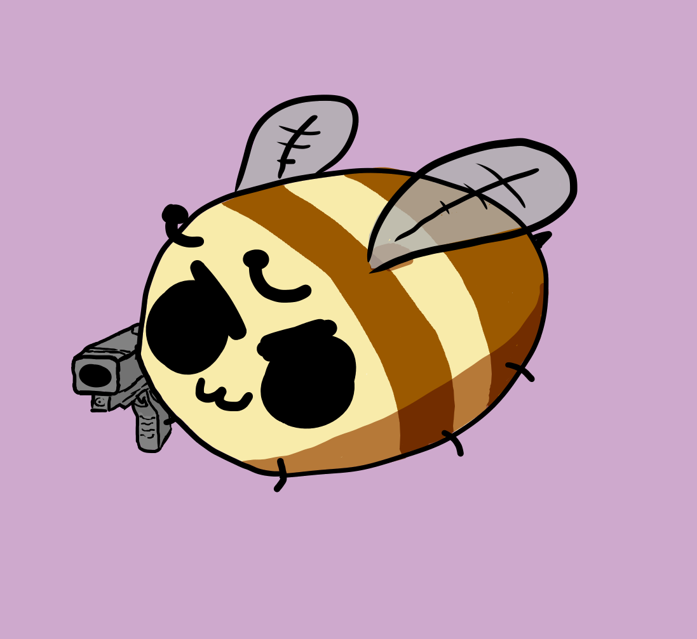
Tijdelijke profielfoto voor verschillende social media |
|
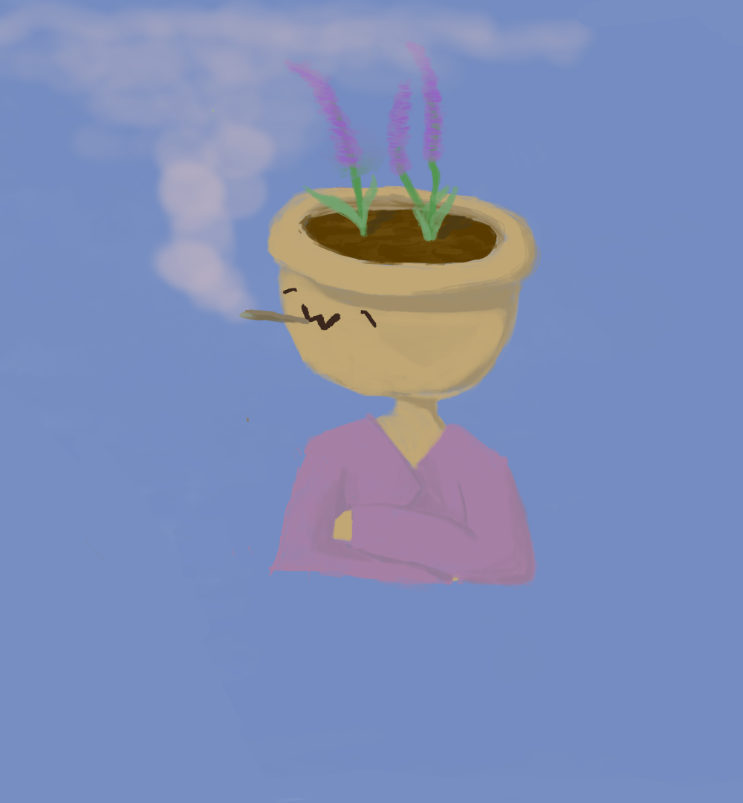
zelfde karakter als hierboven |

"Vessel" tekening voor inktober 2022 |
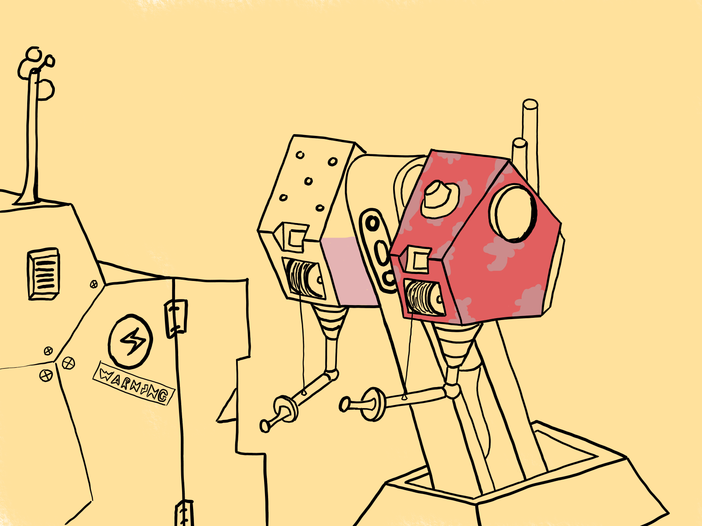
Oefentekening voor het gebruik van Krita, niet afgemaakt |
|
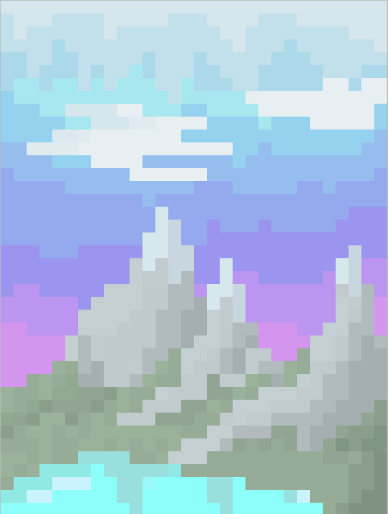
pixel art voor als voorbeeld voor een schilderij |
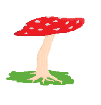
Pixel art van een paddestoel |
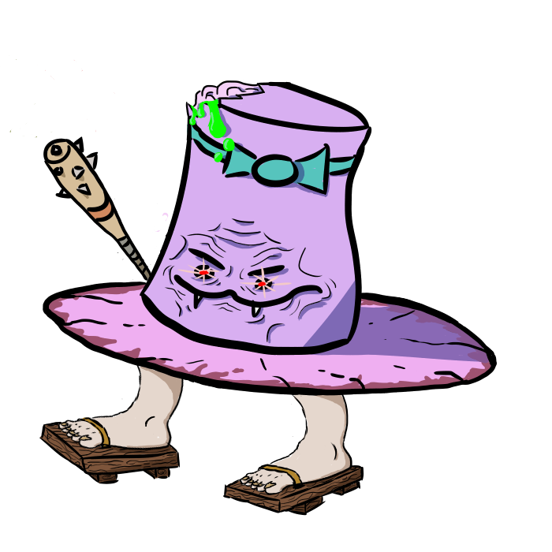
tekening gemaakt als grap, maar ik ben vergeten wat de grap was |
|
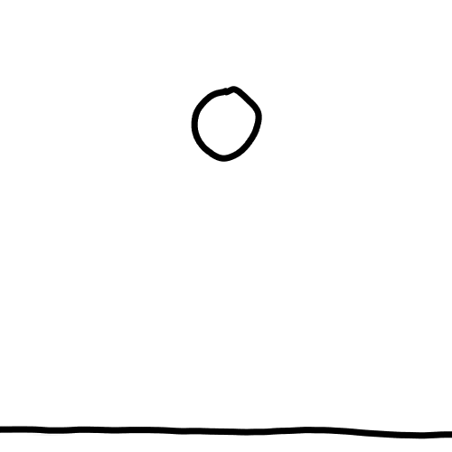
Korte stuiterbal animatie als experiment (24 fps) |

"scallop" tekening voor inktober 2022 |
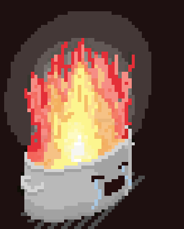
"flame" pixel art voor inktober 2022 |

Tekening van het karakter Zenyatta uit overwatch, niet afgemaakt |
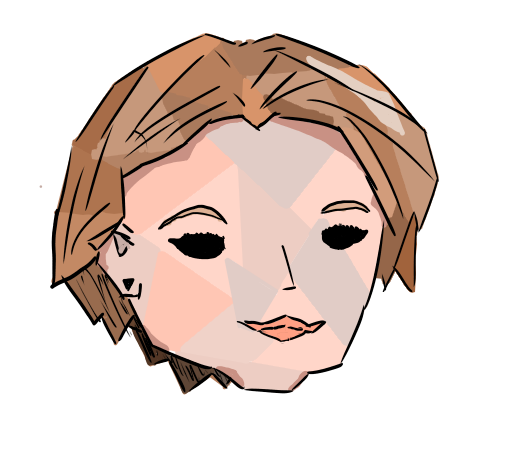
Tekening van een vrouw |

Animatie experiment van een walking cycle |
|
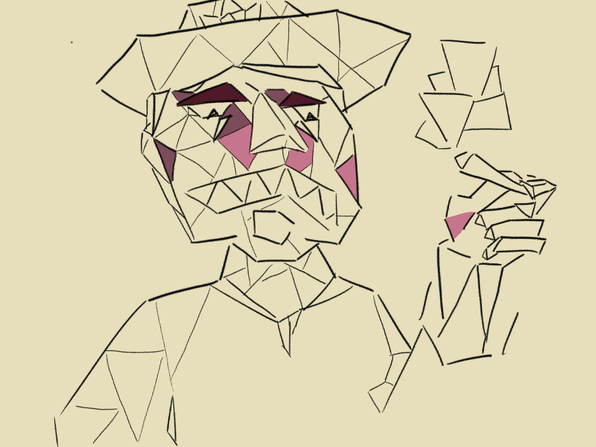
Tekening van een sheriff, niet afgemaakt |
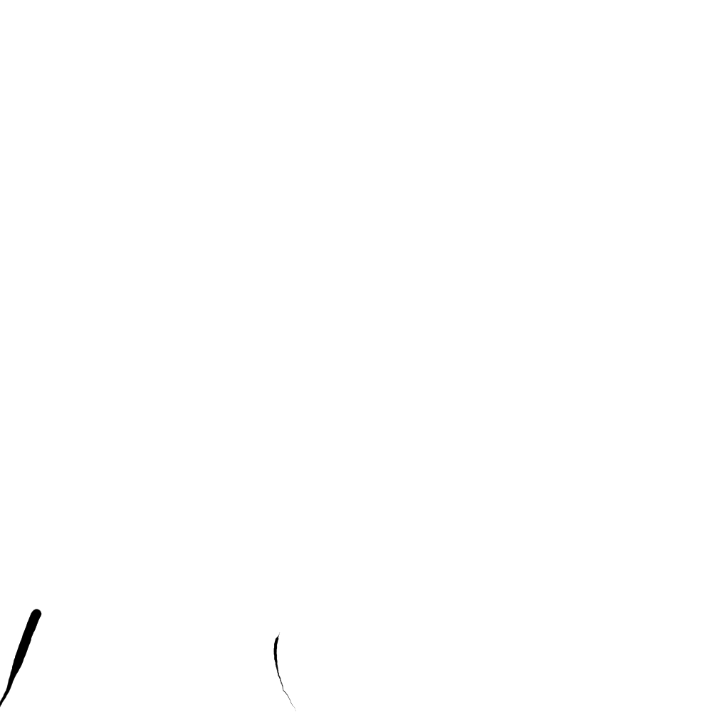
animatie experiment van letters |

"Knot" pixel art voor inktober 2022 |
|
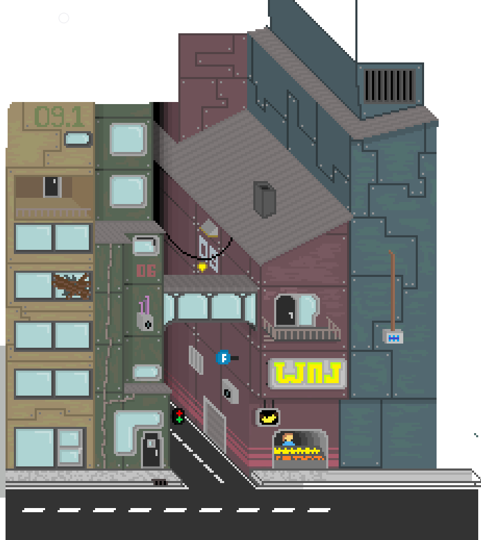
pixel art van een stad, niet afgemaakt |
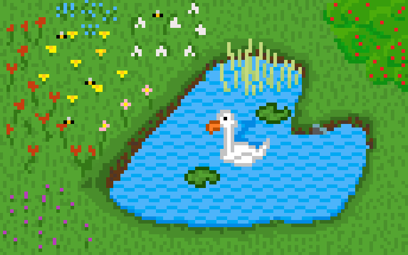
pixel art van een vijver |
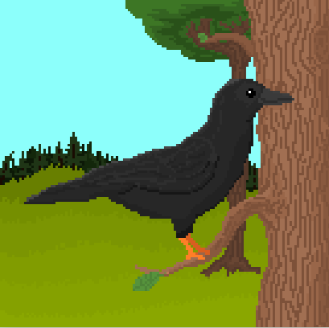
Pixel art van een vogel |

Frame 1 van een strip gemaakt voor een schoolproject |

Frame 2 |

Frame 3 |

Frame 4 |

Frame 5 |

Frame 6 |